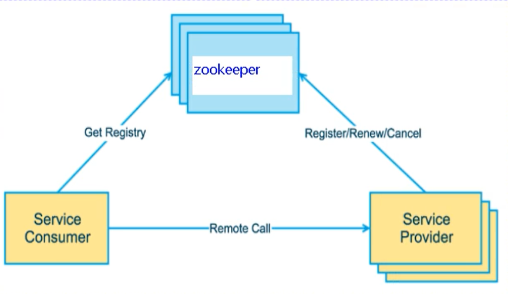
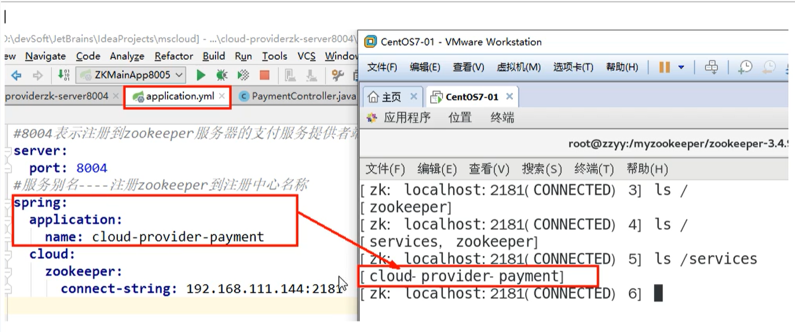
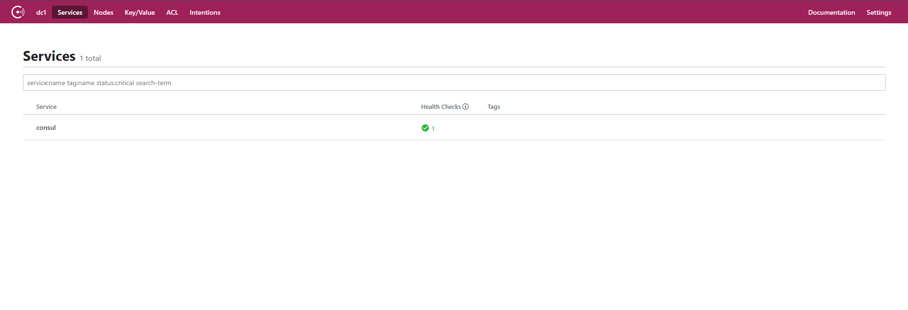
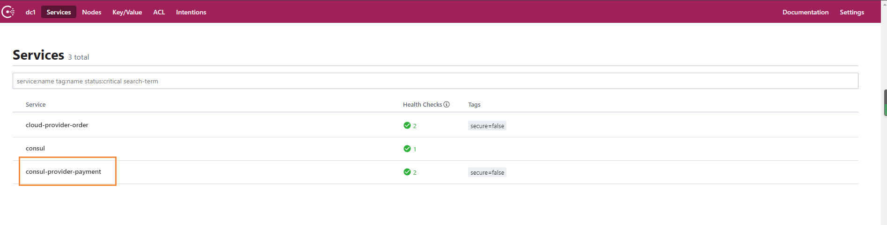
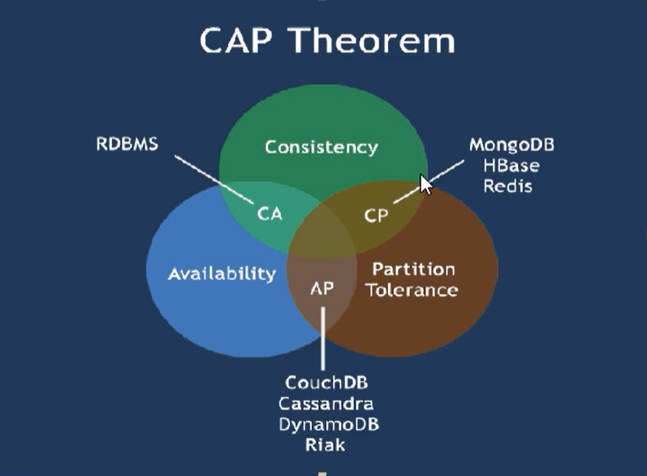
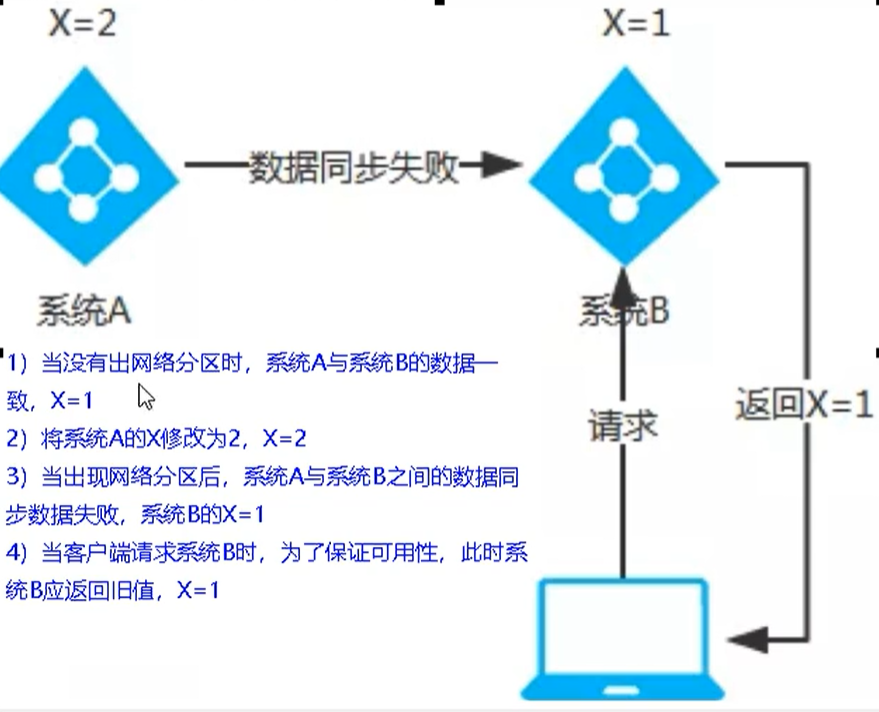
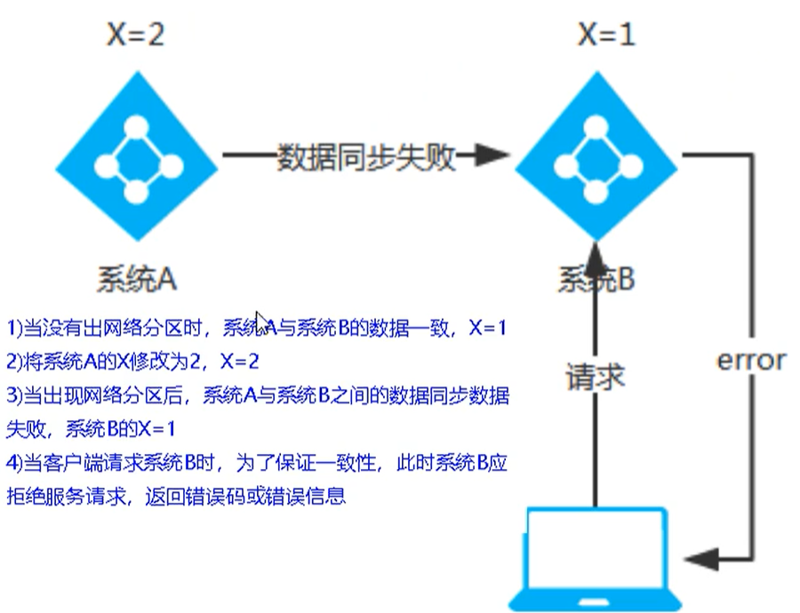

Eureka停更后的替换
Eureka停更后的替换有Zookeeper替换Eureka、Consul替换Eureka。
Zookeeper替换Eureka
Zookeeper是什么
Zookeeper是一个分布式协调工具，可以实现注册中心功能
关闭Linux服务器防火墙后，启动Zookeeper服务器，Zookeeper服务器取代Eureka服务器，zk作为服务注册中心。

搭建Zookeeper注册中心
引入依赖
1 | <!--zookeeper客户端--> |
修改配置文件
连接上Zookeeper客户端
1 | spring: |
修改主启动类
使用@EnableDiscoveryClient 注解
1 | @SpringBootApplication |
启动
启动成功后，把服务注册进Zookeeper客户端

思考
服务已经成功注册到Zookeeper客户端，那么注册上去的节点被称为临时节点，还是持久节点？
首先Eureka有自我保护机制，也就是某个服务下线后，不会立刻清除该服务，而是将服务保留一段时间
Zookeeper也一样在服务下线后，会等待一段时间后，也会把该节点删除，这就说明Zookeeper上的节点是临时节点。
Consul替换Eureka
简介
官网：https://www.consul.io/
Consul是一套开源的分布式服务发现和配置管理系统，由HashiCorp公司用Go语言开发
提供了微服务系统中的服务治理、配置中心、控制总线等功能，这些功能中的每一个都可以根据需要单独使用，也可以一起使用构建全方位的服务网路，总之Consul提供了一种完整的服务网络解决方案。
它具有很多优点，包括：基于raft协议，比较简洁；支持健康检查，同时支持HTTP和DNS协议，支持跨数据中心的WAN集群，提供图形化界面，跨平台，支持Linux，MAC，Windows
功能
- 服务发现：提供HTTP和DNS两种发现方式
- 健康监测：支持多种方法，HTTP，TCP，Docker，Shell脚本定制化
- KV存储：Key，Value的存储方式
- 多数据中心：Consul支持多数据中心
- 可视化Web界面
安装
官网：https://www.consul.io/downloads.html
查看版本：
consul --version运行：
consul agent -dev
运行成功后，然后访问 http://localhost:8500，进入consul的可视化界面

服务提供者注册Consul
引入依赖
1 | <!--consul--> |
修改yml
1 | #consul服务端口号 |
然后启动项目，即可发现服务提供者已经注册到Consul中了

总结
| 组件名 | 语言 | 健康检查 | 对外暴露接口 | CAP | Spring Clou集成 |
|---|---|---|---|---|---|
| Eureka | Java | 可配支持 | HTTP | AP | 已集成 |
| Consul | Go | 支持 | HTTP/DNS | CP | 已集成 |
| Zookeeper | Java | 支持 | 客户端 | CP | 已集成 |
CAP理论简介
CAP理论
Availability：高可用
Consistency：强一致性
Partition Tolerance：分区容错性
CAP理论关注粒度是数据，而不是整体系统设计的策略
因此现在的微服务架构要么是 CP 要么是 AP，也就是P一定需要保证，最多只能较好的同时满足两个
CAP理论的核心：一个分布式系统不可能同时很好的满足：一致性，可用性和分区容错性这个三个需求
因此，根据CAP原理将NoSQL数据库分成了满足CA原则，满足CP原则，满足AP的三大类
- CA：单点集群，满足一致性，可用性的系统，通常在可扩展性上不太满足
- CP：满足一致性，分区容忍性，通常性能不是特别高
- AP：满足可用性，分区容忍性，通常对一致性要求低一些

部分情况下，我们对数据一致性的要求没有这么高，比如蘑菇博客的点赞和浏览记录，都是每隔一段时间才写入数据库的。
AP架构
Eureka是AP架构

因为同步原因出现问题，而造成数据没有一致性
当出现网络分区后，为了保证高可用，系统B可以返回旧值，保证系统的可用性
结论：违背了一致性C的要求，只满足可用性和分区容错性，即AP
CP架构
Zookeeper和Consul是CP架构

当出现网络分区后，为了保证一致性，就必须拒绝请求，否者无法保证一致性
结论：违背了可用性A的要求，只满足一致性和分区容错性，即CP